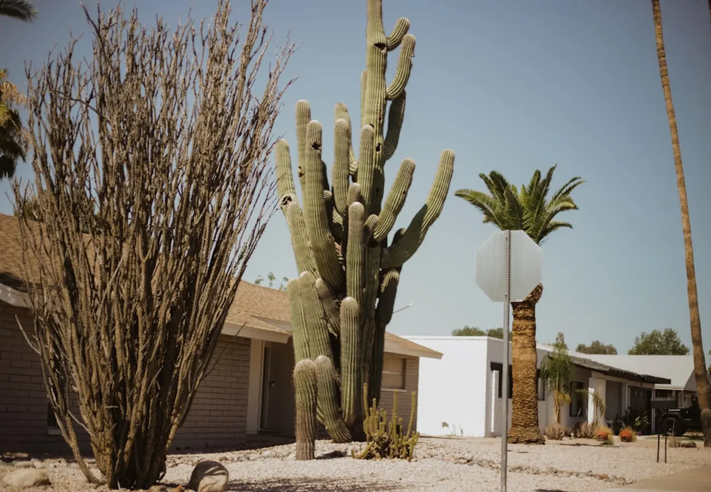
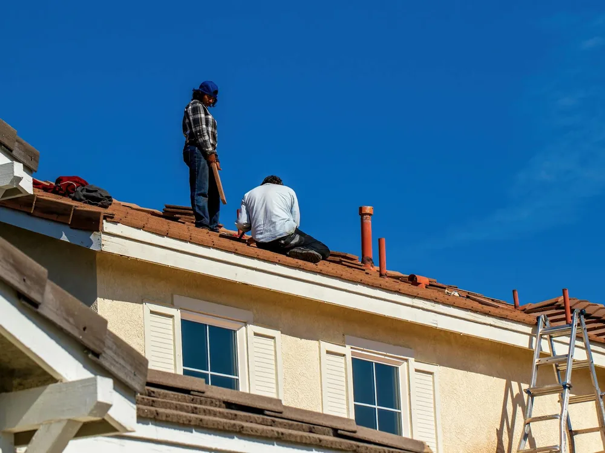

Sell My House As‑Is? Start With Your Situation
Eleven hard spots a sale can hit, and how each way of selling handles them.
Get My Cash OfferNo judgment
Plain Answers for a Hard Sale
A sale can come with a deadline, a court, a tenant or more work than anyone wants to take on. None of it is unusual, and none of it means you are out of options.
Each section below says what usually gets in the way and how a cash offer, a listing or, where it fits, Cash to Win handles it. Mark sets the numbers side by side, so you choose with the whole picture.

Inherited a home
Selling an Inherited House
A house has come to you through a family estate. It may be full of belongings, behind on upkeep, or a long drive from where you live.
What usually gets in the way: the heirs have to agree on a price and a plan, the house often needs clearing out before it can be shown, and taxes, insurance and utilities keep coming while it sits.
- Cash offer: usually bought as it sits, and many investors let you leave what you do not want.
- Listing: usually the highest price, once the house is cleared out and ready to show.
Probate or estate sale
Selling a House in Probate
The house is part of an estate going through probate court, and someone has to sell it on the estate's behalf.
What usually gets in the way: the paperwork. The personal representative named by the court signs the sale, and title companies ask for the court's letters of appointment before closing. The house may sit empty while that is sorted out.
- Cash offer: usually as-is, with a closing date Mark asks to fit the court's paperwork.
- Listing: usually the most for the estate, with time for repairs, showings and a buyer's loan.
Divorce or separation
Selling a House in a Divorce
A shared house has to be sold as part of a divorce or separation, and both owners need a number they can agree on.
What usually gets in the way: both owners on title usually have to sign, and the sale has to fit the divorce agreement or court order. Repairs and showings are hard to settle when two owners share every decision.
- Cash offer: one clear number and a set date, usually with no repairs or showings to agree on.
- Listing: usually more to divide, with more decisions to make together along the way.

Behind on payments
Behind on the Mortgage
The mortgage has fallen behind, the late notices are arriving, and you want to know what the house could bring before things go further.
What usually gets in the way: time. Each month adds late fees, and the sale usually has to pay off what is owed, unless the lender agrees to take less in a short sale. Calling early leaves more ways open.
- Cash offer: no buyer's loan to wait on, and what is owed is paid from the proceeds through escrow.
- Listing: usually the highest price, when there is time for showings and a buyer's loan.
Facing foreclosure
Selling a House in Foreclosure
A notice of trustee's sale has been recorded on the house, and the sale date is now the deadline everything else has to fit.
What usually gets in the way: the calendar. Under Arizona law (A.R.S. 33-808), the trustee's sale can be no sooner than the 91st day after the notice of sale is recorded, and a sale of the house has to close before the sale date in that notice. Time matters, so call early. Selling is not a promise to stop a foreclosure.
- Cash offer: no buyer's loan to wait on, and Mark asks each investor for a closing date in writing.
- Listing: can bring a higher price, but only if a buyer and a loan can close before the sale date.
Tired of being a landlord
Selling a Rental House
The house is a rental, and the repairs, turnover and late rent have stopped being worth it.
What usually gets in the way: the lease. Showings are hard to schedule while the house is rented, a vacant rental earns nothing while it is fixed up, and the lease and deposits have to be handled at closing.
- Cash offer: many investors buy with the tenants in place, and the lease and deposits usually move to the buyer at closing, as the purchase contract sets out.
- Listing: usually the highest price, with showings set around the lease or after it ends.
Major repairs needed
Selling a House That Needs Work
The roof, the foundation, the plumbing or the air conditioning needs more work than you want to pay for or wait on.
What usually gets in the way: the buyer's loan and inspection. A buyer's lender may not finance a house with safety or structural problems until they are fixed, and an inspection can reopen the price. Selling as-is still means telling the buyer about problems you know of.
- Cash offer: investors usually buy as it sits, with no repairs; most still walk through before closing.
- Listing: usually the highest price, with repairs negotiated after the buyer's inspection.

Vacant house or out-of-state owner
Selling a Vacant House From a Distance
The house sits empty, or you live out of state and cannot be there to manage a sale.
What usually gets in the way: distance. An empty house still needs upkeep, insurance and someone to let people in, and every trip to Phoenix adds cost.
- Cash offer: usually a walk-through or two instead of months of showings, with the house sold as it sits.
- Listing: usually the highest price, though the house has to stay ready to show while you are away.
Leased solar panels
Selling a House With Leased Solar
The house has solar panels on a lease or a loan, and the solar contract has to be dealt with before the house can change hands.
What usually gets in the way: the lease or loan has to be transferred to the buyer or paid off at closing, and some buyers will not take one on. Finding that out late can stall a sale.
- Cash offer: Mark asks each investor up front whether they will take on the panels.
- Listing: the buyer has to agree to take over the solar contract and be approved by the solar company, or it is paid off at closing.
Listing expired or buyer backed out
When the House Did Not Sell
The listing ran out without a sale, or a buyer backed out before closing, and the house is back where it started.
What usually gets in the way: whatever stopped it the first time. A buyer's loan that fell through, a price the market would not meet or repairs found at inspection usually come back unless something changes.
- Cash offer: no buyer's loan to fall through, and the house is usually bought as it sits.
- Listing: a new price or plan can work; Mark sets it beside the cash number so you can compare.
- Cash to Win: if the next home is the goal, buy it first and sell this one after you move. It needs full mortgage pre-approval.
Moving a parent to assisted living
After a Move to Assisted Living
A parent is moving into assisted living, and the house they are leaving needs to be sold, often to help pay for the move.
What usually gets in the way: timing and decisions. The move-in date may come first, the house may be full of belongings, and whoever has the legal authority to sign has to be sorted out early.
- Cash offer: usually as-is, belongings and all, with a closing date Mark asks to fit the move.
- Listing: usually the highest price, with time to clear the house and ready it for showings.

Hard situations
Questions About a Hard Sale
A deadline, a court or a lien changes who signs and when the sale can close. Here is how.
Can I sell if I am behind on payments or facing foreclosure?
Often, yes, if the sale can close before the trustee's sale. In Arizona the trustee's sale can be no sooner than the 91st day after the notice of sale is recorded. Time matters, so call early; Mark can tell you what each way of selling would need. Selling is not a promise to stop a foreclosure.
Can I sell an inherited house before probate is finished?
Often, yes. Once the court appoints a personal representative, that person can usually sell the house while probate is still open. Title companies ask for the court's letters of appointment before closing.
How does selling work in a divorce?
Both owners on title usually have to sign, and the sale has to fit the divorce agreement or court order. A cash offer can give you both one clear number and a set date.
Can I sell a house with a lien or back taxes?
Usually, yes. When the price covers them, liens and back taxes are paid from the sale proceeds at closing, through escrow, so the buyer gets clear title.
Next
Three Ways to Sell, Laid Out Plainly
See the price, the costs and the timeline of a cash offer, Cash to Win and a listing in one table.
See What the House Would Net
Tell Mark about the house. He will come back with the cash offers investors make and a listing estimate, side by side. No obligation.
Get My Cash OfferRather talk first? 602.469.1111